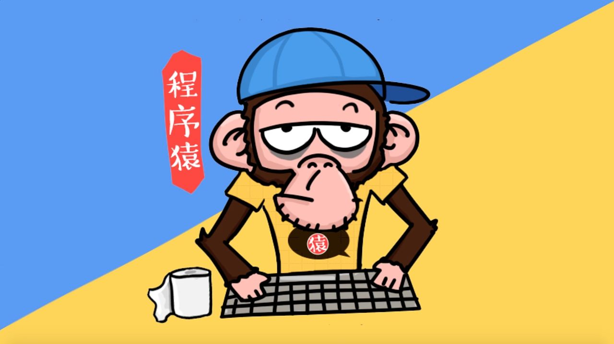

扫一扫，抖音热门技术分享
一个三十而立的男程序员真实讲述：代码搅乱我的生活

讲述者：李仲 31岁 程序员
记录者：杨丁 记者 荆楚网
四年如一日 生活沉闷
我做了四年程序员。这是非常沉闷的一个工作，如果对这行有爱好，还觉得比较有乐趣。如果光是为糊口，则这工作会把人逼疯。像我已经连续四年在开发同一个软件，每日睁开眼就是软件、夜里睡觉闭眼还是软件。只有更长，没有最长，据我所知，国内有程序员连着10多年都在开发同一个软件。
在正常情况下，软件升级的程序一般不超过一年就要升级一个版本。每半年内要开发一次，研发一次的时间约三四个月。但三四个月仅是研发完了，其它的时间由专门的测试人员测试，有问题打回来再修改，测试完交给用户使用后，还要从对方反馈过来的信息，再进行修改。
对同一程序不停地扩展新功能、升级、修改BUG；再扩展、升级、修改。一轮又一轮，没完没了。除非程序员逼得受不了跳槽，或者公司停止开发这个产品，这种日子才算过完。不然，这种折磨永不停止。
老是做一个东西，生活都被它填满了，甚至走路、吃饭、睡觉、与人聊天都想的是它，代码搅乱我的生活程序。
每天对电脑 不会笑了
我的生活除了写代码外，几乎没有“业余”。像我所在公司通常下班后还要加班，加班晚了累得回去倒头就睡。同事之间的交流少得可怜，大伙都长期跟电脑打交道，电脑不会说话，弄得我们也不太晓得么样说话。
程序员一般都不怎么跟人打交道。其实不是咱们不想，是不会。上班就开办公室的电脑工作，碰到不加班，回家就开自己的电脑上下网，性格越搞越孤僻。
我跟外界的接触不多。能打个交道的就是以前上学时的几个朋友，但偶尔聚个会也蛮尴尬。我说话少，通常是他们说，我听，不过我经常走神（通常是在想工作）。有时他们聊一个话题，我想别的去了，等我再回过神来，好不容易插句嘴，他们早就换过几个话题。
工作几乎快占掉我生活中全部的时间。有时碰到技术上的难题，就连睡觉时做梦都在想怎么解决它。
我还是光棍。这段时间，家人急，帮我介绍对象。跑也跑不掉，我只好答应，不过，一想到要去见相亲对象，我脑袋里就一下“格式化”了，不晓得看到别人第一句话说什么好。我发现自己不会笑了，对着镜子练了半天，还是觉得那几个表情不怎么像笑啊。
行业里有个很老的经典笑话：有人一脑壳程序代码和技术术语，跟老婆吵架了，他说，“内部程序错误！”忘了儿子要他做的事，他解释，“CMOS（主板上存储信息的半导体）没电了！”其实程序员就是这样，想开个玩笑，也跟电脑沾边。像我家人跟我说，逛超市不小心多花了几百块，我就说，“钱和密码就像删除键一样，不到万不得已不能轻易使用。”
大脑关不掉 “虾公”很多
做程序员脑子累，身体也累。我有个朋友跟别人合作开发个软件程序。想尽快抢出来打市场，他的笔记本电脑连着近三个月都没关机，他一直在写代码，累了倒头就睡，饿了就泡包方便面。天气太热，电脑CPU第三个月烧了。电脑坏了，里面数据能拿出来。不过，他把本子一扔，转行了。
我身边的“大虾”非常多。整天对着电脑，腰弯着，脊椎变形。加完班，大伙一起身，一扭脖子，就一片“咔咔”响，跟拍恐怖电影样。除了腰颈毛病，做这行的另一个职业病就是“头疼”，这属于神经类疾病，我经常连加一段时间班后，后脑勺就有根筋一扯一扯的痛。医生说这是精神高度紧张加过度疲劳，没休息好弄的。
电脑还可以关机呢，我们这些“不插电的人脑”反倒关不了机。行业猝死概率不低。
IT业程序员的收入其实不像普通人想的那么高，尤其是在一些小公司做。我们是比当地居民的平均水平高一点。但投入产出不成正比。
在国内做软件研发好多都不太挣钱。因为很多IT公司缺乏核心竞争力、产品技术含量低，往往是被洋人牵着鼻子走。洋人不断推出新技术，我们就得不停学习人家的东西。这种情况，哪里能挣到很多钱。摊到程序员头上，所得少得可怜。
但人要糊口、要住房子、要生活。很少有人能专心做技术，导致一些公司研发实力徘徊不前，产品没有优势，影响公司业绩前途。这反过来又使程序员个人收入和发展受限，更没心思钻研技术，进入恶性循环。
抱负没施展 身心受伤害
做这行还是吃青春饭的。一般，程序员做到三十大几就转做管理，或干脆转行。
前面说到国内的软件产业比较落后，技术含量比较低。这么点东西做个几年哪个都会，老程序员就算写代码厉害、经验丰富也用不上，还要价高。事情交给混个三五年的小青年干就行了。老板可以节省大量人力成本，这种好事别个凭么事不做？这是业内潜规则。
跟国外不一样。人家老头子照样在写代码，50多岁还在编程，很受尊敬。
留给咱们老程序员的只有三条路：削尖脑袋钻管理队伍，做老板欺压写代码的马仔；自主创业，转行做别的。我现在也快到年龄了，心里苦得很。这种四年写同一个程序的生活就快熬完，苦日子也不见得到头。
以后怎么走，让人很头痛。后两条不太现实，自主创业没资金没核心技术，转行我不会做别的。
想来想去，还是第一条路保险。不过，一个公司写代码的那么多，管理岗位少得可怜，僧多粥少，我不一定抢得到。前不久，我到另一个公司去应聘管理层，面试官却是个乳臭未干的小屁孩，上司比自己年轻好多，还要摇尾乞怜求着给口饭吃。我自尊心受不了，这样的地方根本不予考虑！
前年，我公司有个跟我一起开发程序的同事丢下谈了N年、早订了婚的女友，跑到国外IT业发展。女方左等右等，看他没回来的意思，就跟别人跑了。女方家属都骂那个同事编程把自己编成个电脑，没人情味了。但同办公室的哥们都还蛮理解他。这完全是给逼的，压力太大了！
同行开玩笑，说咱们程序员像一种常见的、常吃的家禽一样，都是吃青春饭的，被榨干最后一滴血，人老珠黄就没人要了。
来做这行是为追求理想，结果才华没展成，却落得腰弯头疼；走时，连个“下家”都不好找。这就是程序员绕不过的宿命？